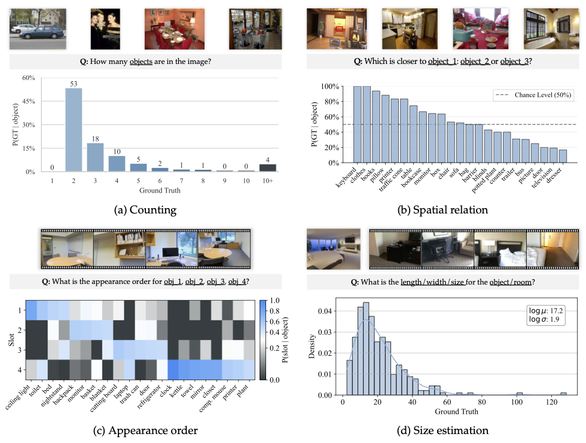
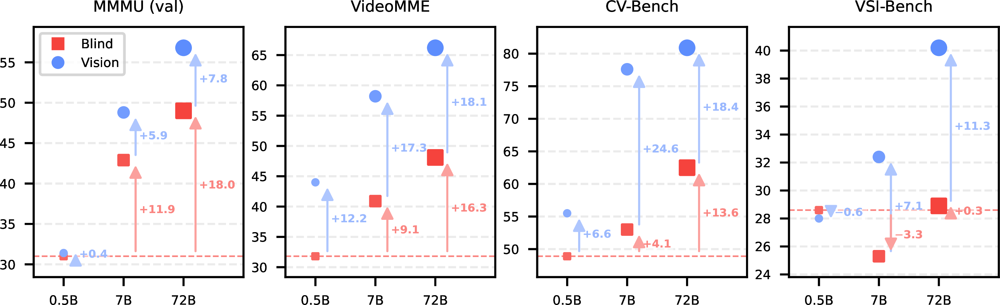
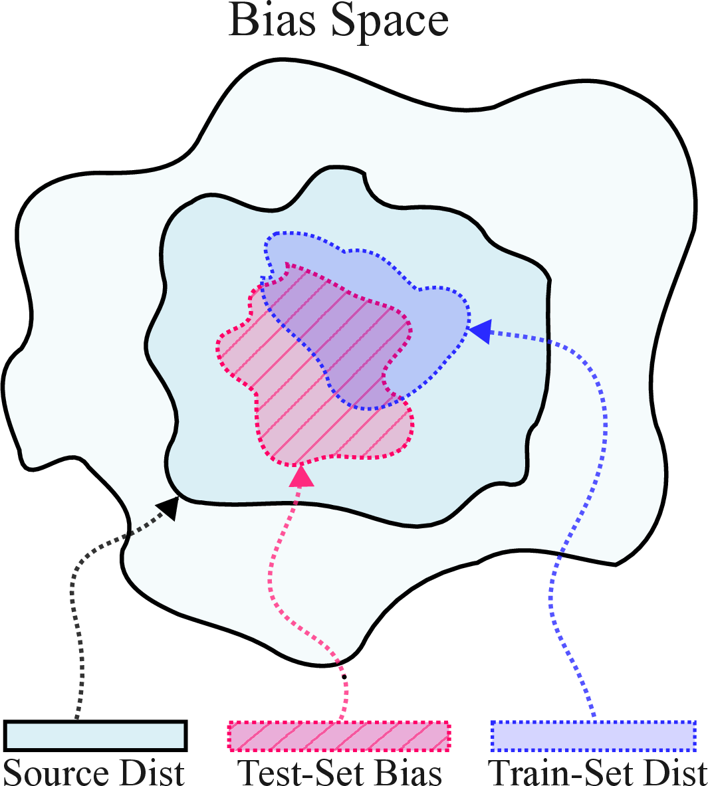
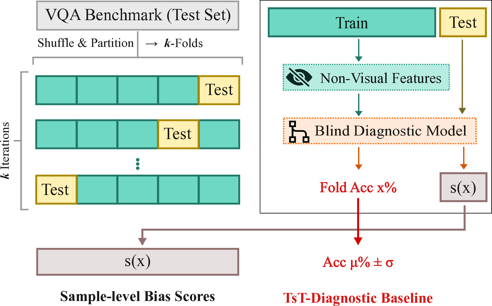
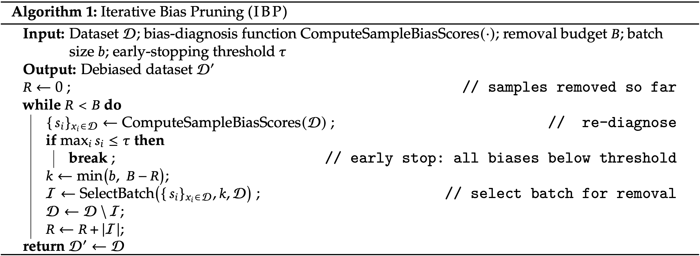

Benchmark Designers Should "Train on the Test Set" to Expose Exploitable Non-Visual Shortcuts
TsT helps multimodal benchmark designers diagnose and mitigate non-visual shortcuts in their benchmarks.
Principle.
If a benchmark can be gamed, it will be, so designers should proactively try to "game" their own benchmarks first.
TsT Diagnostic.
Fine-tuning a powerful LLM via \(k\)-fold cross-validation on exclusively the non-visual, textual inputs of the test set to unveil shortcut performance
Interpretable Audit.
A lightweight Random Forest version (TsT-RF) with hand-crafted features shows which lexical and structural patterns drive shortcuts.
Real Benchmarks.
On VSI-Bench, CV-Bench, MMMU, and VideoMME, TsT exposes +30% blind gains and yields a debiased VSI-Bench with a much larger vision-blind gap.
Robust multimodal benchmarks are the foundation of progress in Multimodal Large Language Models (MLLMs).
Yet we show that many modern “vision-centric” benchmarks can be aced by models that ignore the visual input entirely,
simply by exploiting non-visual shortcuts encoded in the test set’s questions, answer distributions, and templates.
We advocate a simple principle for benchmark design:
if a benchmark can be gamed, it will be.
Rather than hoping blind baselines remain low, we propose that benchmark designers should actively
train on the test set to probe its intrinsic vulnerabilities.
We introduce the Test-set Stress-Test (TsT), which uses \(k\)-fold cross-validation on non-visual test-set information
to (i) estimate a benchmark’s global non-visual solvability and (ii) assign sample-level bias scores \(s(x)\).
We instantiate TsT with a powerful LLM-based diagnostic (TsT-LLM) and an interpretable Random Forest diagnostic (TsT-RF).
Finally, we propose Iterative Bias Pruning (IBP), which uses TsT’s bias scores to iteratively filter high-bias samples
and construct more robust datasets.
Applied to four widely used benchmarks—VSI-Bench, CV-Bench, MMMU, and VideoMME—TsT reveals
pervasive non-visual shortcuts, including gains of more than +30 percentage points in blind accuracy
by learning test-set patterns alone. As a case study, we use TsT + IBP to create a debiased variant of VSI-Bench that
substantially widens the vision–blind performance gap and better compels genuine visual reasoning.
Overview
Modern multimodal benchmarks have evolved from tightly controlled visual tasks to open-ended question-answering
over images and videos. This increased expressivity comes with a hidden cost:
it is much harder to know what is actually being measured.
A model can score highly by exploiting world knowledge and textual regularities,
without truly understanding the visual content.
We focus on non-visual shortcuts:
cases where questions can be answered correctly without using the visual input at all.
These shortcuts can come from natural world knowledge (e.g., "fridges are usually around 170–180cm tall"),
or from statistical quirks of the benchmark (e.g., certain answers appearing disproportionately often,
or specific templates almost always mapping to the same label).
Either way, when the goal is to measure visual understanding, such patterns undermine evaluation.
Figure:
The Evolving Landscape of Visual Understanding Benchmarks. As benchmarks evolved from controlled, narrow tasks to open-ended VQA, they gained expressivity but became vulnerable to non-visual shortcuts. Language-driven evaluation enables flexible querying but risks models exploiting linguistic patterns rather than visual understanding.
Statistical Biases Create Non-Visual Shortcuts
To make this concrete, here are four types of statistical biases we discovered across real benchmarks.
These patterns enable models to achieve high accuracy without visual reasoning:

Figure:(a) Counting: VSI-Bench shows severe answer skew—over 50% of questions have ground truth ≤3, enabling high accuracy by always guessing "2".
(b) Spatial Relation: In CV-Bench depth, certain categories like "keyboard" and "clothes" appear as the correct answer 100% of the time.
(c) Appearance Order: "Clock" appears in the 4th position in 100% of VSI-Bench questions where it appears.
(d) Size Estimation: Room sizes cluster around typical dimensions (log μ ≈ 17m²), making them predictable without seeing the room.
Definition of non-visual shortcuts.
We formalize when a learnable pattern counts as an exploitable shortcut:
whenever it allows models to bypass the visual modality in a benchmark intended to measure visual understanding.
Test-set Stress-Test (TsT).
We propose training a blind diagnostic model directly on the test set (via \(k\)-fold cross-validation)
to quantify how much of the benchmark can be solved from non-visual signals alone.
Sample-level bias scores.
TsT yields per-question scores \(s(x)\) indicating how reliably each sample can be answered without vision,
providing a concrete target for mitigation.
Iterative Bias Pruning.
Using \(s(x)\), IBP iteratively filters high-bias samples, re-diagnoses the remaining dataset,
and repeats until non-visual shortcuts are substantially reduced.
Case study on real benchmarks.
Across VSI-Bench, CV-Bench, MMMU, and VideoMME, TsT exposes large gains in blind accuracy
(up to +33 points), and IBP produces a debiased VSI-Bench variant that better isolates visual reasoning.
The first category of shortcuts comes from world knowledge embedded in LLMs during pretraining.
As shown below, benchmarks like MMMU benefit more from scaling the LLM backbone than from enabling vision,
suggesting they rely heavily on linguistic knowledge. In contrast, VSI-Bench shows negligible gains from
LLM scaling in blind settings but substantial improvements when vision is enabled—demonstrating greater
robustness to knowledge-based shortcuts.

Figure:Knowledge-based shortcuts in multimodal benchmarks.
Blind (red squares) vs. vision-enabled (blue circles) performance across LLaVA-OneVision model scales.
MMMU shows substantial gains from scaling the LLM backbone (x-axis) but minimal improvement from enabling vision (y-axis),
indicating reliance on linguistic knowledge. VSI-Bench demonstrates the opposite pattern—large vision gains with negligible blind scaling—confirming robustness to knowledge-based shortcuts. VideoMME shows roughly equal gains from both sources, while CV-Bench benefits more from vision but still exhibits significant gains from LLM scaling.
Statistical Shortcuts
Not every pattern in a dataset is a shortcut.
The key question is not where a pattern comes from (world statistics vs. annotation artifacts),
but what effect it has on the evaluation.
If a model can exploit a pattern to answer correctly without using the visual signal,
then for a vision-centric benchmark, that pattern is a problem.
For example, consider questions like "Which item is closest to the bed?" where "lamp"
happens to be the correct answer far more often than chance.
Even if this reflects some real-world regularity, in a benchmark that is supposed to probe spatial reasoning,
it lets models answer correctly by leaning on text-only priors rather than the actual image.
Litmus test:
if a blind model can reach high accuracy on a “vision” benchmark, its scores no longer reliably reflect visual understanding.
We distinguish between two failure modes:
Training failures:
biased or insufficient training data prevent models from learning the intended capability,
even if the test set is well-designed.
Evaluation failures:
the test set itself contains patterns that allow models to score well for the wrong reasons,
regardless of how they were trained.
TsT specifically targets evaluation failures:
it asks how much of the test set can be solved by learning patterns in the test questions and answers alone.
The Test-set Stress-Test (TsT) Framework
At a high level, TsT performs \(k\)-fold cross-validation directly on the benchmark’s test set,
using only non-visual information (text, metadata, templates).
For each fold, we train a blind diagnostic model on the remaining folds and evaluate it on the held-out fold.
Every test example is thus predicted by a model that has not seen that example during training,
but has seen the rest of the test set.


Figure:(Left) TsT directly probes biases intrinsic to the specific test set (pink region), rather than approximating them via external training data.
(Right) The test set is partitioned into \(k\) folds, a blind diagnostic model is trained on \(k{-}1\) folds and evaluated on the held-out fold,
and this is repeated until all samples are covered.
Aggregating across folds yields both a global non-visual solvability estimate and per-sample bias scores \(s(x)\).
TsT produces two key outputs:
TsT accuracy.
The overall accuracy of the blind diagnostic across all folds.
High TsT accuracy means a large fraction of the benchmark is solveable from non-visual signals alone,
implying strong exploitable shortcuts.
Sample-level bias score \(s(x)\).
For each sample, \(s(x)\) is the empirical probability that TsT predicts the correct answer
when that sample is in the validation fold.
High \(s(x)\) indicates samples that are consistently answerable without vision and are prime candidates for pruning or rewriting.
TsT-LLM and TsT-RF: Two Complementary Diagnostics
We instantiate TsT with two complementary diagnostics here.
TsT-LLM: Power from the Same Model Class
TsT-LLM uses a strong language model (e.g., Qwen2.5-7B) as the diagnostic.
For each fold, we LoRA-tune the LLM on question-only inputs from the training folds
and evaluate on held-out questions.
This requires no hand-designed features and can capture both simple statistical patterns and complex knowledge-based shortcuts.
On template-based benchmarks like CV-Bench and VSI-Bench, TsT-LLM dramatically increases blind accuracy:
from 40.1 → 73.4 on CV-Bench and 25.0 → 56.4 on VSI-Bench,
revealing +33.3 and +31.4 point gains purely from learning test-set text.
Even on more heterogeneous benchmarks like MMMU and VideoMME, TsT-LLM finds sizeable gains of +8.6 and +6.4 points.
TsT-RF: Fast and Interpretable
TsT-RF uses a Random Forest classifier trained on lightweight, human-interpretable features
(e.g., answer frequencies, template IDs, question length, lexical indicators).
While less expressive than TsT-LLM, it is CPU-friendly and provides direct insight into which patterns
the diagnostic is exploiting, via feature importances.
Together, TsT-LLM and TsT-RF deliver both strong detection of shortcut behavior and actionable explanations
of how benchmark structure contributes to non-visual solvability.
Iterative Bias Pruning (IBP)
TsT does more than say “your benchmark has shortcuts”.
Its sample-level bias scores \(s(x)\) provide a ranking of which questions are most vulnerable.
Iterative Bias Pruning (IBP) turns this into a systematic procedure for improving a benchmark.

Figure:
IBP loop.
At each iteration, TsT is re-run to compute \(s(x)\) on the current dataset,
a batch of the most shortcut-prone samples is removed or revised,
and the process repeats until non-visual solvability drops below a threshold or a removal budget is reached.
Concretely, IBP:
Runs TsT to compute \(s(x)\) for all samples in the dataset.
Removes (or rewrites) a batch of the highest-\(s(x)\) samples.
Repeats diagnosis on the remaining dataset, stopping early when all \(s(x)\) fall below a tolerance.
IBP is agnostic to the specific diagnostic (TsT-LLM or TsT-RF) and to the mitigation action
(pruning, rewriting, rebalancing). In this work, we focus on pruning as a proof-of-concept.
Case Study: Debiasing VSI-Bench
As a concrete demonstration, we apply TsT + IBP to VSI-Bench, a spatial reasoning benchmark.
TsT-LLM shows that a blind model can gain over 30 points of accuracy by training on test-set questions alone,
indicating strong non-visual shortcuts.
IBP uses TsT-RF bias scores to prune shortcut-prone questions and produces a VSI-Bench-Debiased variant.
We then re-evaluate LLaVA-Video-7B before and after fine-tuning on additional in-distribution data:
Vis.
Blind
\(\Delta_{V-B}\)
Vis. (Debiased)
Blind (Debiased)
\(\Delta_{V-B}\) (Debiased)
LLaVA-Video 7B (base)
36.7
25.9
10.8
31.3
20.3
11.0
+ VSI-Train-10k FT
57.1
44.7
12.4
48.7
32.0
16.6
Table:
On the original VSI-Bench, fine-tuning boosts both vision and blind scores,
masking how much progress is due to text-only shortcuts.
On VSI-Bench-Debiased, the blind score falls more sharply,
creating a significantly larger vision–blind gap and better reflecting true visual gains.
This case study illustrates TsT’s full lifecycle:
diagnose non-visual shortcuts, compute sample-level bias scores, prune the worst offenders,
and re-evaluate to confirm that visual reasoning, not text-only priors, drives progress.
Diagnostics Across Four Benchmarks
Beyond VSI-Bench, TsT reveals pervasive shortcuts across three additional benchmarks:
CV-Bench, MMMU, and VideoMME.
In each case, TsT-LLM significantly improves blind accuracy simply by training on the test questions and answers.
TsT-LLM results:
blind accuracy climbs from 40.1 → 73.4 on CV-Bench and 25.0 → 56.4 on VSI-Bench,
with additional gains of +8.6 on MMMU and +6.4 on VideoMME —
all without using any visual input.
These findings highlight that shortcut behavior is not an isolated issue in any single dataset,
but a structural risk across diverse benchmark designs, including template-based, human-authored,
and LLM-generated questions.
Takeaways for Benchmark Designers
TsT is meant to be a practical tool for anyone designing or maintaining multimodal benchmarks.
From our analysis, we propose a set of actionable guidelines:
Always include a “trained blind” baseline.
Zero-shot blind accuracy is not enough. Train a blind model on the test set via TsT and report its performance.
Track both global and per-sample bias.
Use TsT accuracy to quantify overall non-visual solvability, and \(s(x)\) to understand which samples are most affected.
Iteratively refine the test set.
Use IBP (or similar) to prune or rewrite the most shortcut-prone questions until TsT accuracy falls to an acceptable range.
Distinguish training vs. evaluation failures.
High TsT accuracy indicates that evaluation is compromised, even if models are trained “correctly.”
Integrate TsT into the benchmark lifecycle.
Treat stress-testing your test set as a standard step, not an afterthought.
Benchmark designers should “train on the test set” —
not to inflate scores, but to adversarially audit evaluation instruments
and ensure that reported progress reflects genuine multimodal understanding.
BibTeX
@article{brown2025shortcuts,
author = {Brown, Ellis and Yang, Jihan and Yang, Shusheng and Fergus, Rob and Xie, Saining},
title = {Benchmark Designers Should ``Train on the Test Set'' to Expose Exploitable Non-Visual Shortcuts},
journal = {arXiv preprint arXiv:2511.04655},
year = {2025}
}